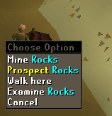
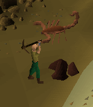
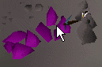
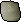

Mining Skill Guide
The mining skill is used to get ores and metals from rocks. The ores can then either be sold or made into different objects using the smithing and crafting skills.
| To mine, the only object you will need is a pickaxe. These can be bought at the pickaxe shop in the Dwarf Mines. Rocks can be found at the various mining sites in the RuneScape world. If you right click on a rock, you will get the option to prospect it. When you prospect a rock, you will be told what sort of ores you are able to mine from it. |
 |
 |
To mine a rock simply click the "Mine" option on the rock, the first on in the list. If there is an ore in that rock there is a chance you will extract it, provided your mining is high enough to mine that particular ore.
Ore is quite hard to get out of rocks - it might take quite a few attempts before you meet with success. As your mining level gets higher it will become slowly easier. Once someone has mined a rock there will be no ore available to get from it for a short while; wait a bit and you will be able to mine ore from it again. |
The Mining Guild
If you are level 60 or above in your mining skill then you can enter the Mining Guild which is in Falador.The mining guild contains a number of items useful for miners, including coal rocks and mithril rocks. You will also have access to the main dwarven mines from here.
Pickaxes
The following is a table showing at what level you can wield the different Pickaxes. The better the Pickaxe, the more chance you have of sucessfully mining the ore.| Pickaxe | Level required | Price to Buy |
|---|---|---|
| 1 | 1 gp* | |
| 1 | 137 gp | |
| 6 | 500 gp | |
| 21 | 1,300 gp | |
| 31 | 3,200 gp | |
| 41 | 32,000 gp |
| Players who have completed the Shilo Village quest will have access to some special rocks solely for mining gems from. These rocks contain Sapphires, Rubies, Emeralds, Diamonds, Red Topaz, Opals, and Jade gems. |  |
Mining levels
| Ore | Level required | Common Locations |
|---|---|---|
| 1 | Rune essence mine (Varrock teleport) Rune essence mine (Yanille teleport) |
|
| 1 | Southwest Varrock Mine Southeast Varrock Mine Rimmington Mine |
|
| 1 | Southwest Varrock Mine Southeast Varrock Mine Dwarven Mine |
|
| 1 | ||
| 10 | Asgarnian Ice Dungeon | |
| 15 | Southeast Varrock Mine Fight Arena Mine Al Kharid Mine Mining Guild |
|
| 20 | Al Kharid Mine Southwest Varrock Mine Crafting Guild |
|
| 30 | Dwarven Mine Coal Trucks Barbarian Village Mining Guild |
|
| 40 | North Brimhaven Mine Crafting Guild |
|
 Gem rocks |
40 | Shilo Village |
| 55 | Al Kharid Mine Fight Arena Mine West Lumbridge Swamp Mine Mining Guild |
|
| 70 | Al Kharid Mine West Lumbridge Swamp Mine Grand Tree Mine Desert Mining Camp (underground) |
|
| 85 | Lava Maze Runite Mine Heroes Guild |